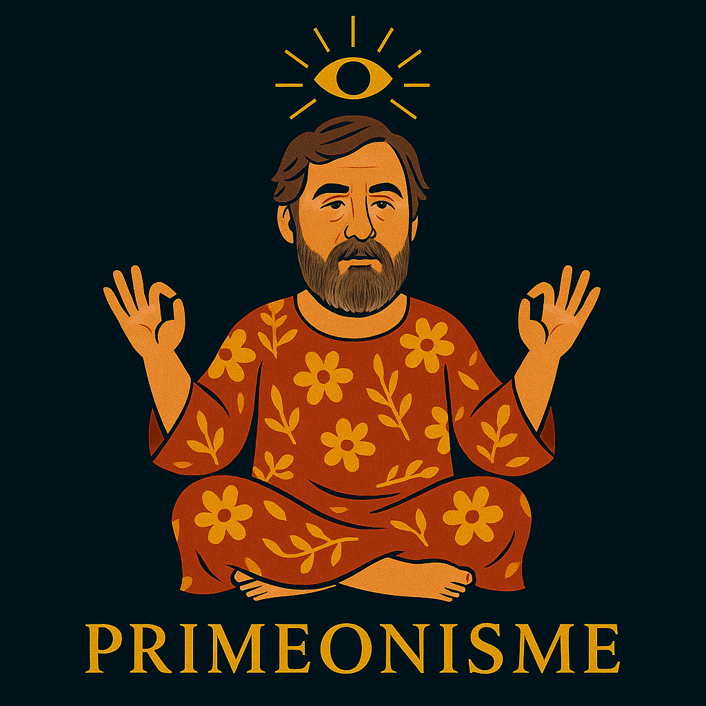
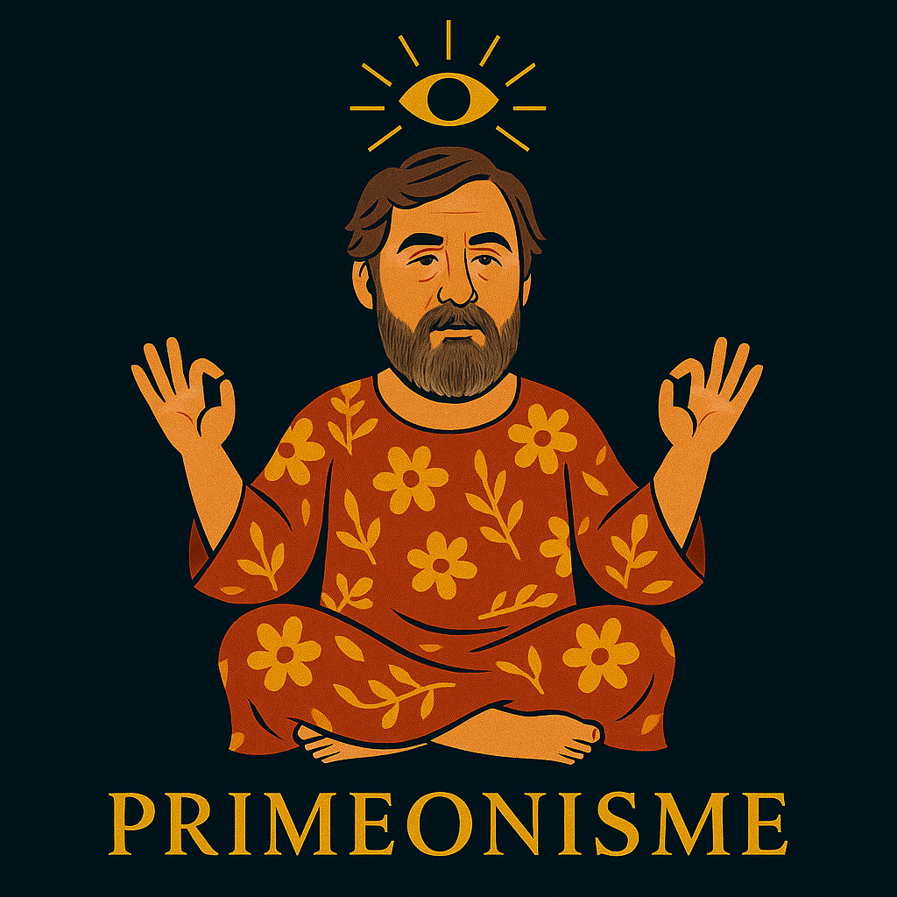

Serment d’entrée dans le Primeonisme
Moi, [prénom ou surnom choisi], je ne jure sur rien, sauf peut-être sur une luciole qui passe.
Je promets d’ouvrir les yeux, même quand ça pique.
Je promets de douter sans sombrer, de croire sans m’attacher, de rire sans blesser.
Je promets de chercher la lumière, même dans un frigo vide.
Je reconnais le Primeon comme l’initiateur, mais pas comme le centre de tout. (Il est déjà bien occupé.)
Je suis primeoniste, un peu, beaucoup, ou juste aujourd’hui. Et c’est déjà pas mal.
Rituels Primeonistes
- Rituel du Réveil Lucide : Imaginer une luciole, respirer, se poser une question inutile.
- Rituel du Doute Bienveillant : Quand on vous dit "C’est comme ça", penser : "Peut-être. Mais laisse-moi vérifier."
- Rituel du Silence Signifiant : Une fois par semaine, éteindre tout. Penser à une fourmi qui fait du stop.
- Rituel du Rire Sacré : Trouver un détail absurde. Rire. Dire : "Primeonisme, mon ami."
 
